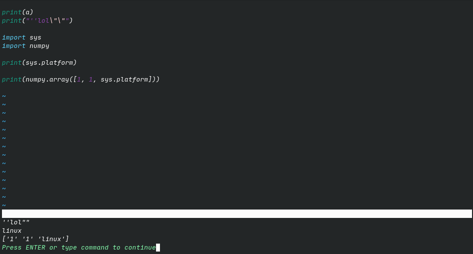
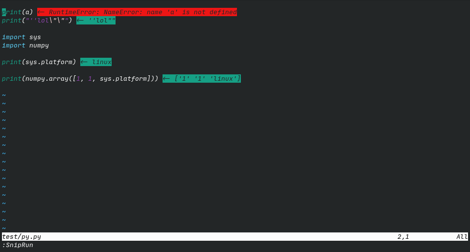
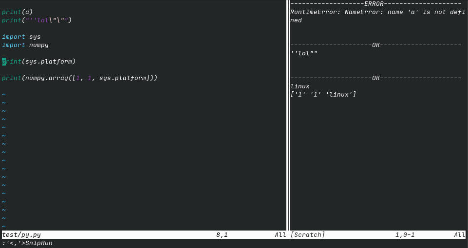
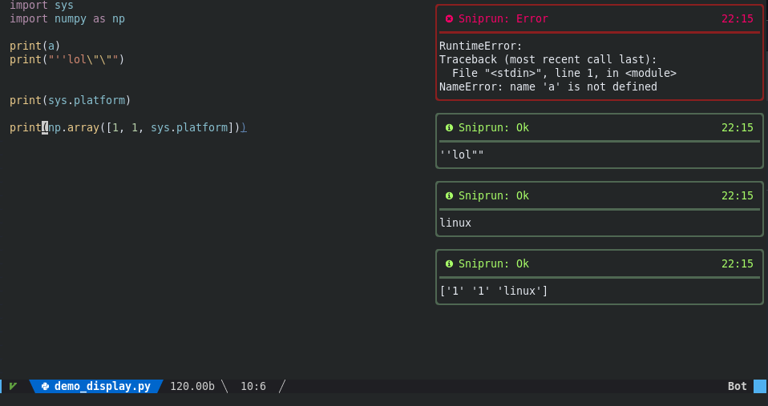

Introduction
Sniprun has many different display modes, which you can combine and filter:
Display modes:
“Classic”
“VirtualText”
“VirtualLine”
“Terminal”
“TerminalWithCode”
“TempFloatingWindow”
“LongTempFloatingWindow”
“NvimNotify”
“Api”
Suffixes:
“Ok” (only display sucessfull results)
“Err” (only display errors - compilation or runtime)
To configure which display mode(s) you want, just include their names (+suffix if wanted) in the display configuration key:
require('sniprun').setup({
display = {
"Classic", -- will display both 'ok' & 'err' results in the command area
"VirtualTextOk", -- will display only 'ok' results as virtual text on the line sent to sniprun
},
})
Available display modes
Classic
Results are displayed on the command area.
Pro/cons:
Supports multi-lines results
Can (maybe) be copied
Ok/Err highlighting
Disappear on the next keypress
require'sniprun'.setup({
display = { "Classic" },
})

Virtual Text
Results are displayed as virtual text after the end of the line you sent to sniprun. (In case it’s a block, it goes at the end of the last line)
Pro/cons:
Does not disappear (except after a SnipClose)
Ok/Err highlighting (outputs for ok and error results are highlighted with the groups
SniprunVirtualTextOkandSniprunVirtualTextErrrespectively)Visually close to the code
No multiline possible. Results are shortened on a best-effort basis
Cannot be copied
Cannot be used as the same time as Virtual Line
require'sniprun'.setup({
display = {
"VirtualText",
},
})

Virtual Line
Results are displayed as virtual lines after the line/visual selection you sent to sniprun.
Pro/cons:
Does not disappear (except after a SnipClose)
Ok/Err highlighting (outputs for ok and error results are highlighted with the groups
SniprunVirtualTextOkandSniprunVirtualTextErrrespectively)Visually close to the code
Multiline works out-of-the-box
Cannot be copied
Visually moves the code around, especially for long outputs (eg: print in loops)
require'sniprun'.setup({
display = {
"VirtualLine",
},
})
Temporary floating windows
Result are displayed in (temporary) floating windows. “LongTempFloatingWindow” will only display multiline messages, which allow for nice combinations with “VirtualText”
Pro/cons:
Visually close to the code
Ok/Err highlighting (the highlight groups used are “SniprunFloatingWinOk” and “SniprunFloatingWinErr”)
Supports multiline results
Disappears on the next keypress
Cannot be copied
require'sniprun'.setup({
display = { "TempFloatingWindow" },
})

Terminal
Results are displayed in a side panel
Pro/cons:
Support multiline, and auto-scrolls when full
Results can be copied and do not disappear (except after a SnipClose)
Customizable width
No highlighting (only a ‘ok’ or ‘err’ message)
Can display the code that ran along with the result (with the “TerminalWithCode” variant)
require'sniprun'.setup({
display = { "Terminal" },
display_options = {
terminal_scrollback = vim.o.scrollback, -- change terminal display scrollback lines
terminal_line_number = false, -- whether show line number in terminal window
terminal_signcolumn = false, -- whether show signcolumn in terminal window
terminal_position = "vertical", --# or "horizontal", to open as horizontal split instead of vertical split
terminal_width = 45, --# change the terminal display option width (if vertical)
terminal_height = 20, --# change the terminal display option height (if horizontal)
},
})
if you experience wrapping of the header line ‘—- OK —’ due to the presence of a number column, you can (and should anyway) set
autocmd TermOpen * setlocal nonu

Notification
Results are displayed through the nvim-notify plugin (which must be installed).
Pro/cons:
Supports multiline
Ok/Err highlighting
Disappears after 5s (timeout is customisable)
lua << EOF
require'sniprun'.setup({
display = {"NvimNotify"},
display_options = {
notification_timeout = 5, -- in seconds
notification_render = "default" -- nvim-notify render style
},
})
EOF

API display
Results are displayed through an user-provided function
You can register listeners that will be called upon (async) sniprun output:
local sa = require('sniprun.api')
sa.register_listener(custom_function)
where custom function is a function that take one unique argument: a table which contains at least two entries:
‘status’ (a string that’s either ‘ok’ or ‘error’ for now, but your function should accept & manage other values)
‘message’ (also a string, maybe be multiline)
(Simply put, registered functions are callbacks)
Thus, an example of such a function (imitating the ‘Classic’ display with ‘uwu’ tendencies) would be
local api_listener = function (d)
if d.status == 'ok' then
print("Nice uwu: ", d.message)
elseif d.status == 'error' then
print("Oh nyow! Somethuwuing went wyong: ", d.message)
else
print("Whut is this myeow? I don't knyow this status type nyah")
end
end
sa.register_listener(api_listener)
(You must also enable the ‘Api’ display option, and in this particular case where things are printed to the command line area, disabling ‘Classic’ is recommended)
If your function requires to be manually closed (on SnipClose), you can register a closer the same way:
sa.register_closer(custom_function)